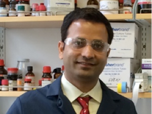
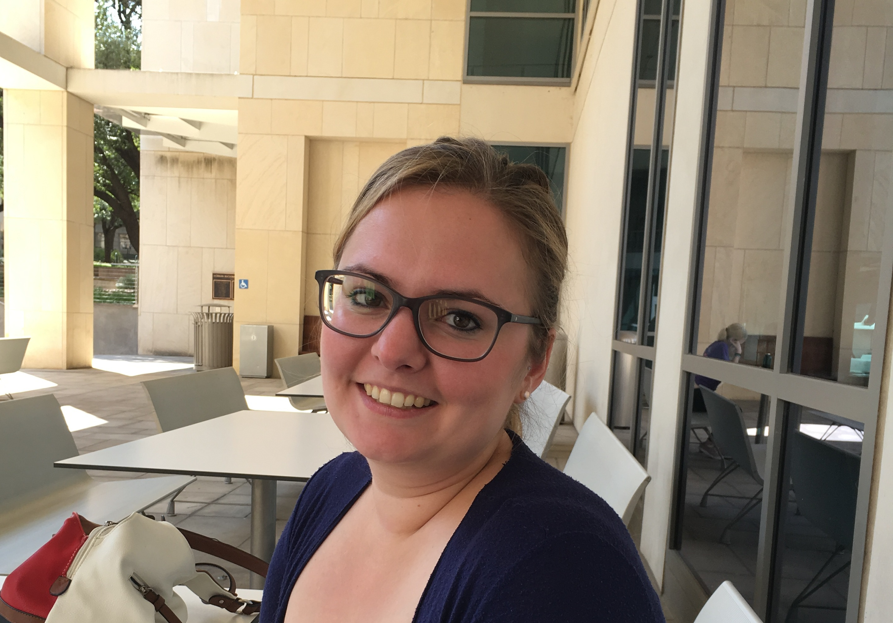
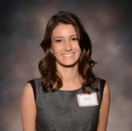

Anslyn Group Members

|  |
DR. RAMAKRISHNA EDUPUGANTI 10/15/11 Biography: During my graduate studies at Temple University, Philadelphia, I worked with prof. Franklin A. Davis and prof. Grant R. Krow and involved in "Asymmetric Synthesis of Homotropinone and Tropane Alkaloids Using Enantiopure Sulfinimines & the Synthesis and Applications of Methanoprolines". Contact: erkchem@gmail.com |

|
ROGELIO ESCAMILLA 10/5/13 Contact: escamiriam@utexas.edu |

|
LOGAN BACHMAN 6/1/14 Biography: I attended UT Austin for my undergraduate degree where I worked for Eric Anslyn doing small molecule synthesis of kinase inhibitors. After graduating, I officially joined the Anslyn group in 2014 where I work on the synthesis of fluorophores and fluorescent peptides that are used toward single-molecule peptide sequencing, in collaboration with Edward Marcotte. Contact: lbach@utexas.edu |

|
BRENDEN HERRERA 12/1/14 Contact: btherrera@utexas.edu |

|
DR. XIAOLONG SUN 6/1/14 Biography: I attended UT Austin for my undergraduate degree where I worked for Eric Anslyn doing small molecule synthesis of kinase inhibitors. After graduating, I officially joined the Anslyn group in 2014 where I work on the synthesis of fluorophores and fluorescent peptides that are used toward single-molecule peptide sequencing, in collaboration with Edward Marcotte. Contact: xxs2759@utexas.edu |
|
DR. JAMES REUTHER 1/1/15 Biography: I was born and raised in Olney, Maryland, a suburb outside of Washington D.C. I moved to Blacksburg, VA in 2006 where I attended Virginia Tech for my undergraduate studies. I graduated in 2010 with my B.S. in chemistry and a minor in mathematics and immediately joined the Department of Chemistry at North Carolina State University working under Dr. Bruce M. Novak. My research mainly focused on the synthesis and application of chiral, helical polymers called polycarbodiimides. Contact: jfr948@utexas.edu | |

|
SAM DAHLHAUSER 10/15/15 Contact: dahlhsd0@gmail.com |
|  |
LEA WENSKOWSKY 10/15/16 Biography: I was born and raised in Mainz, Germany. I studied Chemistry at the Johannes Gutenberg-University Mainz and received my diploma in 2014 under the supervision of Professor Dr. Till Opatz and in a collaboration with the Sanofi-Aventis Deutschland GmbH. Since July 2014, I am PhD student in the research group of Professor Opatz and my research is focused on the synthesis and application of albumin binders. In July 2017, I joined the group of Eric Anslyn as PhD exchange student working on boronic acid functionalized albumin binders. Contact: lea.wenskowsky@utexas.edu |

|
LINGYU ZENG 10/15/16 Biography: I grew up in Wuhan, China. In Wuhan University, I received my B.S. in chemical biology in 2013, and continued my PhD. study in analytical chemistry under the supervision of Dr. Zhihong Liu. I joined Anslyn’s group as a visiting PhD. student in Nov. 2016. Contact: chinson@utexas.edu |

|
CAROLINE HINSON 10/15/16 Biography: I grew up in a small town in Michigan, outside of Ann Arbor, before returning to my home state of Florida for undergraduate studies at the University of Florida. After graduating I worked at The Dow Chemical Company in Midland, MI in Core R&D and Dow Coating Materials R&D developing additives for industrial and architectural coatings. I joined the Anslyn Group in the fall of 2016 and am working on the single molecule sequencing project in collaboration with the Marcotte Group. Contact: chinson@utexas.edu |
|  |
BAYLIE BURKE 10/15/16 Contact: baylie.burke@utexas.edu |

|
DOOHEE LEE 7/1/17 Biography: I was born in South Korea. During my master's, I worked in Prof. Jong-In Hong's research group at Seoul National University. I am so glad to join the Anslyn group. My Ph.D. studies began in the summer of 2017 and I am studying fluorescent sensors for various targets. Contact: catalyzer@utexas.edu |

|
STEPHANIE VALENZUELA 10/15/17 Biography: Stephanie Valenzuela was born and raised in Sonoma, California. She attended the Santa Rosa Junior College before transferring to the California State University, Sacramento. While at Sacramento State, Stephanie worked under Dr. John D. Spence investigating the synthesis, thermal and photochemical reactivity of quinoxaline based enediynes. Furthermore, she was fortunate to participate in the McNair Scholars Program at Sacramento State. In 2017 she graduated with her B.S. in Chemistry and moved from California to Texas to begin her graduate studies. Now in Austin, Stephanie enjoys going on walks with her dogs along Shoal Creek, eating good BBQ and most importantly, learning about chemistry! Contact: savalenzuela@utexas.edu |